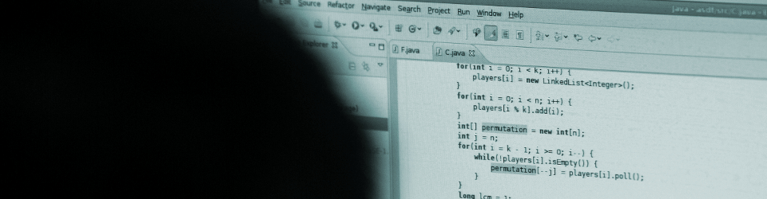
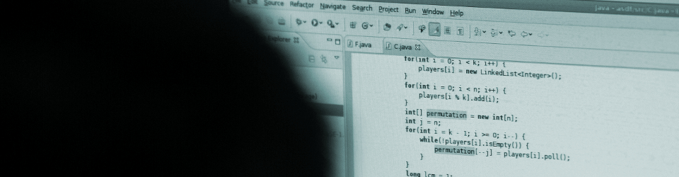
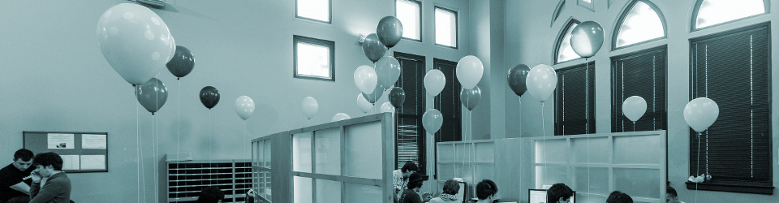
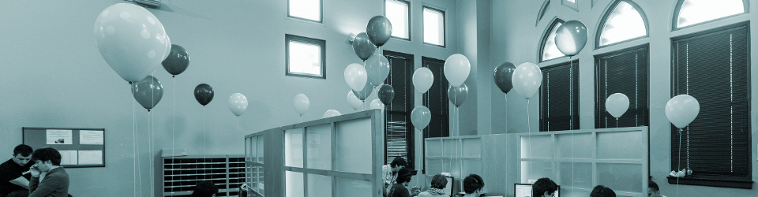

 

Holding an Event on Campus
One of the roles of the Computer Science Student Activities Committee is to facilitate and promote the organization of events that are of interest to technical students on campus. It does so by providing a point of contact for companies looking to hold on-campus recruitment events, and by facilitating visits by other external speakers.
This page contains information meant mostly for companies looking to recruit technical students on campus. You will find a description of the types of events we host, and how to set up such an event on campus. External speakers whose primary purpose is not student recruitment (e.g., academic speakers, etc.) are typically sought out directly by the committee. Nonetheless, if you are an external speaker interested in setting up a talk targeted at technical students, feel free to contact us at events@studentactivities.cs.uchicago.edu.
Types of Events
If you are a company interested in recruiting on campus, there are several events that can help you connect with technical students at the University of Chicago:
-
Hack Nights (organized by hack@uchicago): A weekly event, held every Friday night, where the university's hackers (students passionate about computer programming and technology in general) get together to mingle and work on projects.
Hack nights are available for sponsorship. By sponsoring a hack night, with a minimum donation of $500 to the Computer Science Student Activities Fund, you will be advertised as the event's sponsor, and will be allowed to send representatives to the event. These representatives must be software developers that can converse with our students on a technical level. Recruiters, HR representatives, etc. are not a good fit for this kind of event. Your developers will be allowed to address the entire room for 5-10 minutes and can stay for the entire event to mingle with students. You will also be allowed to distribute "swag" (t-shirts, stickers, etc.) to students.
-
Hackathons (organized by hack@uchicago): Hackathons are two-day events (typically held over a weekend) that happen once a quarter. The goal at a hackathon is for groups of students to work on specific projects during those two days, which they demo at the end of the event. A panel of judges is selected by the organizers to evaluate the quality of the projects, with the top projects receiving substantial prizes (e.g., at a recent hackathon, the winners received two Macbook Airs).
Sponsorship of a hackathon involves a minimum donation of $1,000 to cover food and room expenses. The sponsor must also supply prizes for the top projects (either by purchasing the prizes directly, or via an additional donation). In exchange for your sponsorship, you will be advertised as the event's sponsor, and participants will be exposed to your brand over the course of two days. Besides sending representatives to the event, you will also be allowed to deliver a 15-minute talk before the final demos (the demo session is attended not just by hackathon participants but also by additional students interested in the demos).
Please note that, in general, we do not host "themed" hackathons where students are required to work on a specific platform or set of tools. The sponsor is welcome to propose projects that students can hack on but, ultimately, the prizes must be open to all students, regardless of the type of project they develop.
-
Tech Talks (organized by the ACM Student Chapter): A technical talk is a 45-60 minute talk delivered by an expert in the field. To hold a technical talk on campus, you must send a speaker that can deliver a full-length, rigorous, deeply technical talk on the kind of work done at your company.
Tech talks are very effective at persuading students that they should apply to work at your company because it impresses upon them that you are a legitimately technical company, and gives them a glimpse of the kind of work they would do at your company.
Holding a tech talk on campus does not require any sponsorship. However, tech talk proposals are held to a much higher level of scrutiny than proposals to participate in a hack night or hackathon. Your proposal will be evaluated by Computer Science students and faculty, and will only be accepted if it addresses a deeply technical topic that can be of interest to our students. In particular, the committee is not interested in recruitment talks that only describe a company (and its technical aspects) from a high-level perspective.
-
Programming Contests (organized by the ACM Student Chapter): The university participates in the ACM's International Collegiate Programming Contest (ICPC), the largest and oldest programming contest in the world, and has qualified for the World Finals of this competition in 2000, 2001, 2009, 2010, 2011, and 2012.
Participation in this contest involves a variety of expenses (in the order of $10,000 per year) that can be covered by a corporate sponsor. Unlike the previous three types of events, sponsoring our programming teams does not result in much exposure to the broader technical community on campus. However, it does provide preferential access to our ICPC contestants, who tend to be exceptionally talented programmers.
Process to hold an event on campus
If you are interested in participating in one of the events described above, please contact the Student Activities Committee at events@studentactivities.cs.uchicago.edu with the following information:
- Company name
- Type of event you would like to participate in (hack night, hackathon, tech talk, or programming contest)
- Brief description of the positions you are hoping to recruit for (include links to specific job postings if available) and the profile of students you'd like to recruit.
If you would like to hold a tech talk on campus, please include the following too:
- Speaker's name
- Short biography of speaker
- Talk title and brief abstract (2-3 paragraphs).
A member of the Student Activities Committee will follow up with you to discuss the next steps. In most cases, we will work with you to find a date on our calendar that works on our end, and to make sure everything is ready in anticipation of your visit. We will also process the transfer of funds for events requiring sponsorship. In most cases, a check made out to the University of Chicago is enough (The University of Chicago is a 501(c)(3) non-profit organization; any amount contributed towards sponsoring an event is tax-deductible to the extent allowable by law).